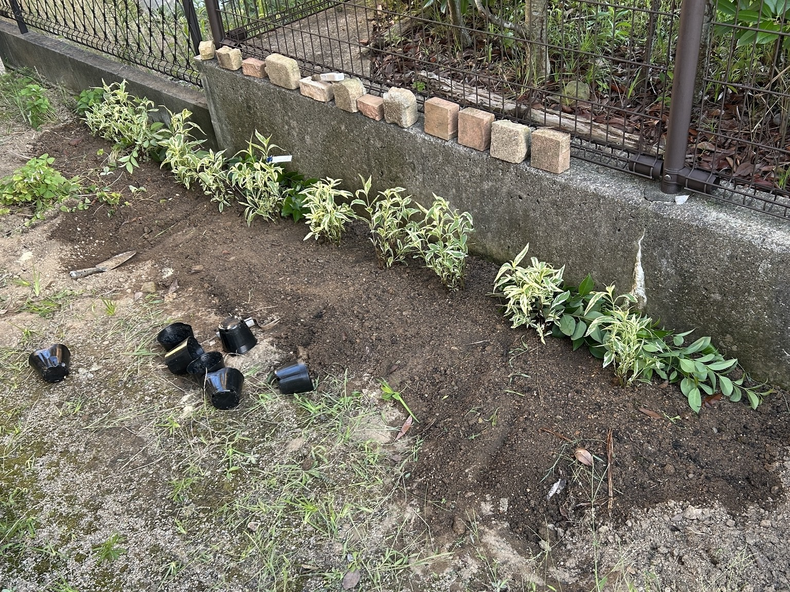
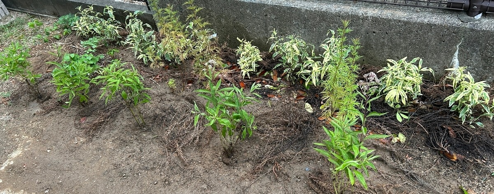
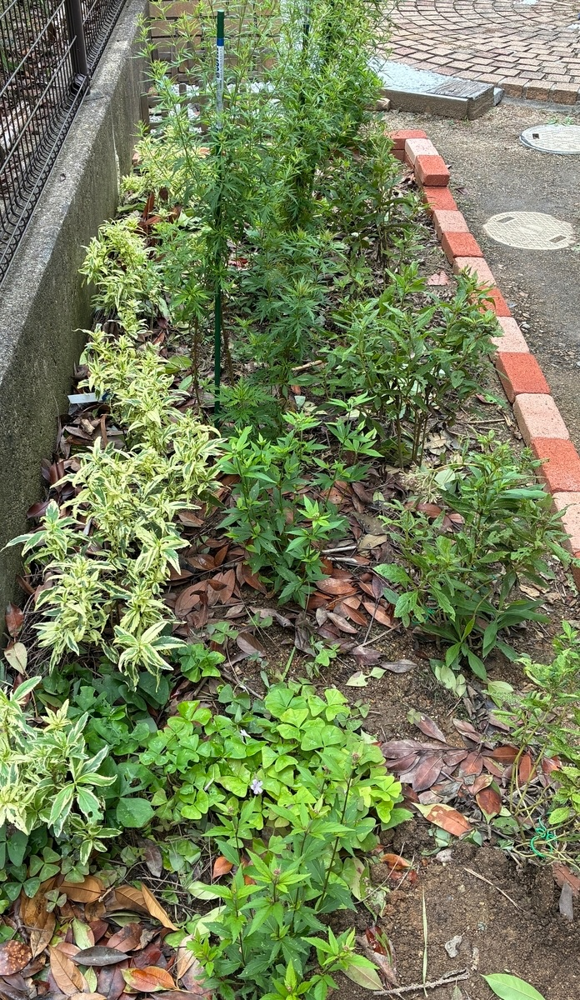
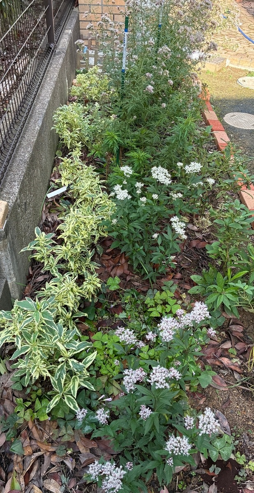

2025/07/19 ピンクフロストから花壇づくりを開始
花壇づくりの最初の記録です。まずはユーパトリウム・ピンクフロスト（斑入り）を植え付けました。まだ土が広く見え、これから株を増やして花壇全体を形づくっていく段階でした。

2025/08/09 ベイビージョーとフジバカマ（羽衣）を追加
ユーパトリウム・ベイビージョーとフジバカマ（羽衣）を植え付け、花壇の構成を広げました。7月のスタート時点より植物の種類と株数が増え、花壇としての形が少しずつ見えてきました。

2025/09/20 合計23苗の花壇へ
左側（正面から見て奥側）にユーパトリウム・ピンクフロスト10苗、中央にフジバカマ（羽衣）3苗とフジバカマ（原種系）5苗、右側（正面から見て手前側）にユーパトリウム・ベイビージョー5苗。合計23苗の配置が整いました。

2025/10/25 植え付けた株が育ち、花壇に開花が広がる
7月から植え付けてきた株が大きく育ち、白や淡いピンク色の花房が花壇の各所で見られるようになりました。植え付け当初には広く見えていた土も枝葉で覆われ、花壇全体に高さと奥行きが出てきました。

2025年は、7月19日にピンクフロストの植え付けから花壇づくりを始め、8月にベイビージョーとフジバカマ（羽衣）を追加。9月には合計23苗の花壇となり、10月には植え付けた株が成長して花が広がりました。何もなかった場所から、秋には花壇らしい景色へ変わっていった最初の一年でした。
0 件